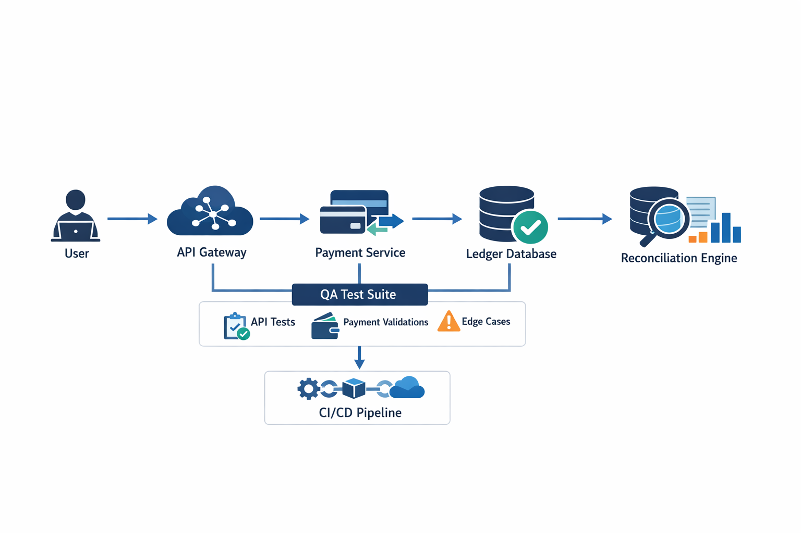

Fintech QA Engineer | Payment Systems | API Testing | Data Reconciliation
I design and validate reliable financial and backend systems with a focus on payment correctness, API reliability, and data integrity. My work ensures systems behave correctly under both normal and failure conditions.
